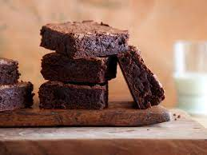

g
Aunt Teen's Creamy Chocolate Fudge
Aunt Teen's Creamy Chocolate Fudge

Description
The most delicious brownie you will ever eat! read this wonderful recipe and savor it like it's your last meal
This recipe was made by Kelly Phillips of allrecipes.com a recipe passed down through generations now straight into your home by the wonderful magic that is the internet!
Ingredients
- 1 and 1/2 cups of white sugar
- 1 (7 ounce) jar marshmellow creme
- 2/3 cup evaporated milk
- 1/4 cup of butter
- 2 cups milk chocolate chips
- 1 cup semisweet chocolate chips
- 1/2 cup chopped nuts
- 1 teaspoon vanilla extract
Steps
- combine the first four ingredients over medium heat then boil for 5 minutes
- remove the mixture from the heat then stir in the chocolate
- stir in the nuts and vanilla
- Transfer to a prepared pan chill until set and cut into squares